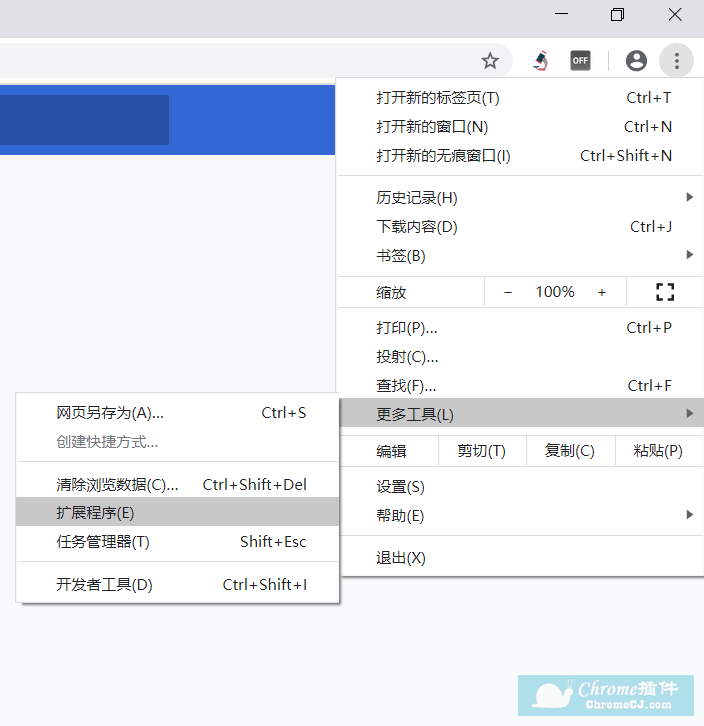
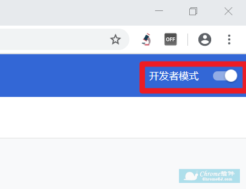
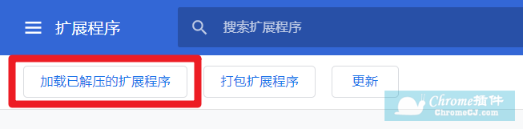
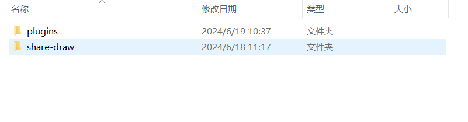
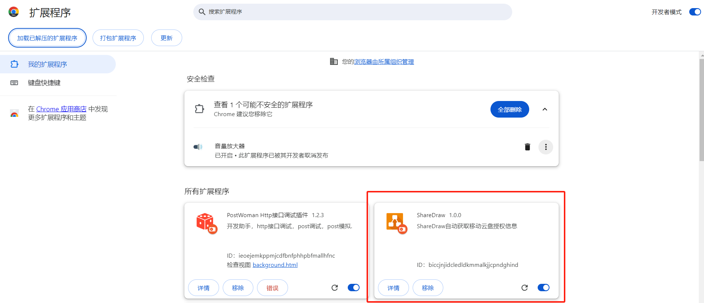

安装Google插件（Chrome扩展程序）是一个简单的过程。请按照以下步骤操作：
- 首先，下载插件文件（例如：share-draw.zip）。
- 打开chrome浏览器——点击三点按钮——更多工具——扩展程序。 
- 在扩展程序页面，打开右上角的“开发者模式”开关（如果尚未打开）。 
- 点击“加载已解压的扩展程序”按钮。 
- 选择包含插件文件的文件夹（例如：解压后的share-draw文件夹）。 
- 点击“选择文件夹”以完成安装。 
安装Google插件（Chrome扩展程序）是一个简单的过程。请按照以下步骤操作：